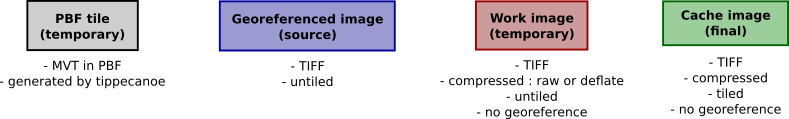

| Shell.pm | |
| ROK4:: | |
| GLOBAL VARIABLES | |
| setGlobals | Define and create common working directories |
| getScriptDirectory | |
| getPersonnalTempDirectory | |
| OVERLAY N TIFF | |
| OVERLAYNTIFF_W | |
| Main function | |
| getMainScript | Get the main script allowing to launch all generation scripts on a same machine. |
| Export function | |
| getScriptInitialization |
Configure and assemble commands used to generate raster pyramid’s slabs.
All schemes in this page respect this legend :
use ROK4::JOINCACHE::Shell;
if (! ROK4::JOINCACHE::Shell::setGlobals($commonTempDir, $mergeMethod)) {
ERROR ("Cannot initialize Shell commands for JOINCACHE");
return FALSE;
}
my $scriptInit = ROK4::JOINCACHE::Shell::getScriptInitialization($pyramid);| GLOBAL VARIABLES | |
| setGlobals | Define and create common working directories |
| getScriptDirectory | |
| getPersonnalTempDirectory | |
| OVERLAY N TIFF | |
| OVERLAYNTIFF_W | |
| Main function | |
| getMainScript | Get the main script allowing to launch all generation scripts on a same machine. |
| Export function | |
| getScriptInitialization |
sub getScriptInitialization
| pyramid | ROK4::Core::PyramidVector - Pyramid to generate |
Global variables and functions to print into script
Define and create common working directories
sub setGlobals
sub getScriptDirectory
sub getPersonnalTempDirectory
Get the main script allowing to launch all generation scripts on a same machine.
sub getMainScript
sub getScriptInitialization